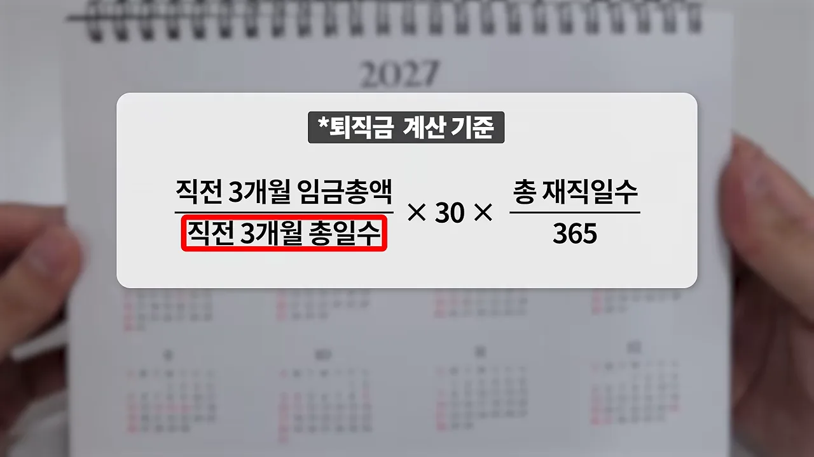
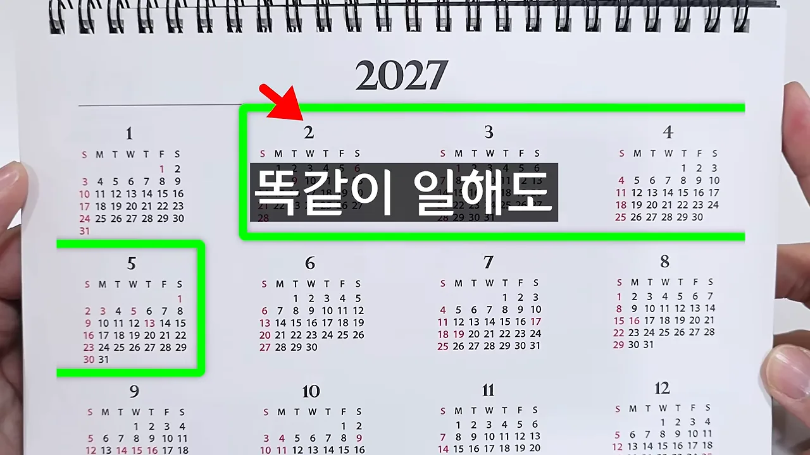
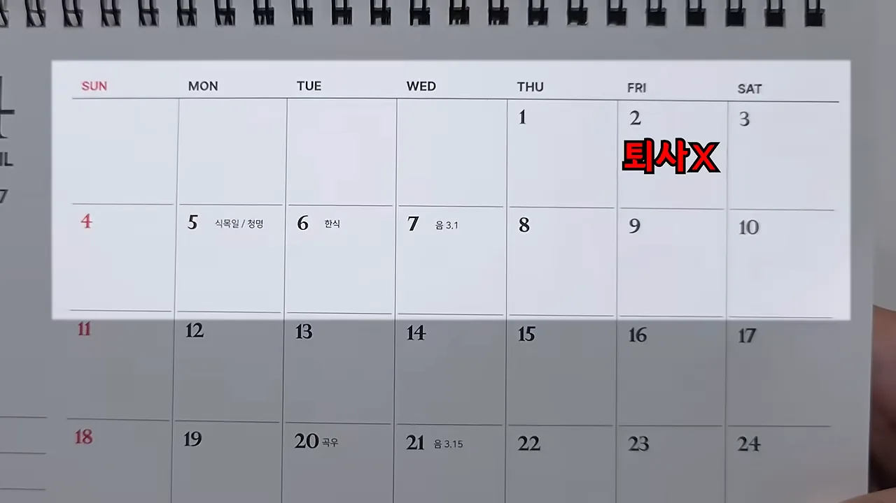
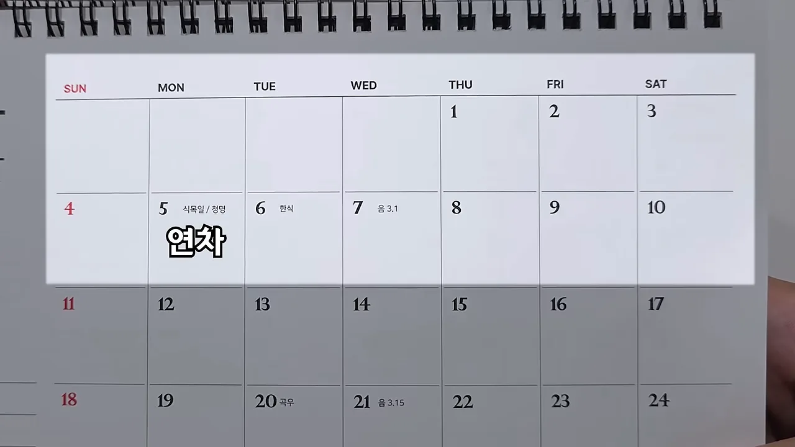
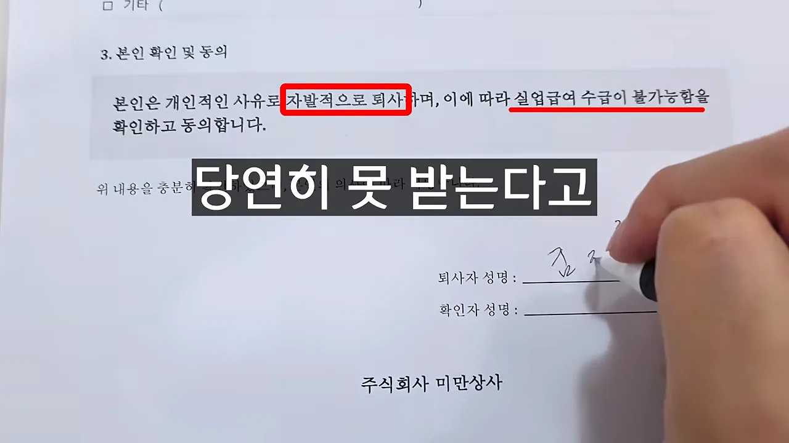
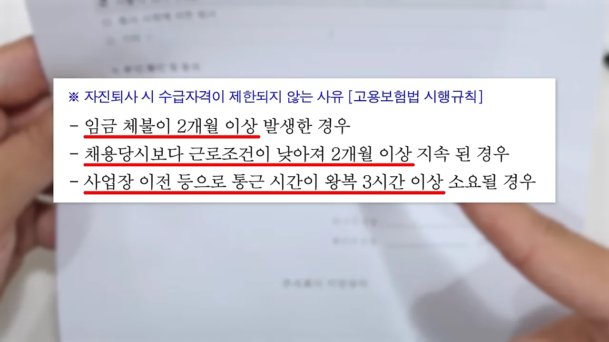

퇴사 날짜로 퇴직금이 달라지는 이유
퇴사 날짜는 보통 회사가 정해 줘요. 인사팀은 "최소한 이 날까지는 일해 줘야 사람도 구하고 인수인계도 한다"고 말하죠. 영상은 이 날짜를 회사 사정대로만 정하면 손해라고 해요. 같은 기간을 일해도 언제 그만두느냐에 따라 퇴직금이 달라지기 때문이에요.
분모가 작아지면 퇴직금이 커져요
영상이 달력 위에 띄운 퇴직금 계산 기준이에요. 왼쪽 분수는 직전 3개월 임금총액을 직전 3개월 총일수로 나눈 값, 곧 하루치 평균임금이에요. 여기에 30을 곱하고, 총 재직일수를 365로 나눈 값을 곱해요. 빨간 테두리는 분모인 '직전 3개월 총일수'에 쳐 있어요.

그래서 28일밖에 없는 2월이 핵심이에요. 2월이 직전 3개월 안에 들어가면 총일수가 줄어들고, 같은 임금총액을 더 작은 수로 나누니 하루치 평균임금이 커져요. 아래 달력에서 빨간 화살표가 2월을 가리키고, 초록 상자가 2~4월과 5월 초를 묶어요. 영상은 이 시기, 곧 2월이 낀 3월·4월이나 5월 초에 퇴사하면 똑같이 일해도 퇴직금이 더 나온다고 말해요.

금요일보다 화요일에 그만두세요
요일도 따져요. 영상은 주간 달력의 금요일(2일)에 '퇴사X'를 붙이고, 이어서 그다음 월요일(5일)에 '연차'를 적어요. 금요일에 그냥 그만두지 말고, 남은 연차를 월요일에 써서 화요일 퇴사로 맞추라는 뜻이에요.


이렇게 하면 금요일 뒤 주말 이틀이 재직 기간 안에 들어와요. 영상은 지폐 위에 '+주말 2일치 급여'와 '+근속일수 추가분'을 붙여 보여 줘요. 주말 이틀치 급여에 근속 일수까지 챙겨서 최소 몇십만 원을 더 받는다는 게 영상의 주장이에요. 다만 영상은 그 금액을 직접 계산해 보여 주지는 않아요.
얼마나 더 받는지는 월급과 근속 기간, 회사의 월급 일할 계산 방식에 따라 달라져요. 영상에서는 여기까지만 다뤄요. 정확한 금액은 회사 급여 규정을 확인하는 게 좋아요.
자진퇴사해도 실업급여를 받는 경우
스스로 그만두면 실업급여는 당연히 못 받는다고 생각하기 쉬워요. 영상이 보여 주는 퇴사 서류에도 그렇게 적혀 있어요. 빨간 테두리가 '자발적으로 퇴사'에, 밑줄이 '실업급여 수급이 불가능함'에 그어져 있고, 퇴사자가 그 아래에 서명하고 있어요.

영상은 이게 항상 맞는 건 아니라고 말해요. 서류 위에 띄운 카드의 제목은 '자진퇴사 시 수급자격이 제한되지 않는 사유 [고용보험법 시행규칙]'이고, 사유 세 줄에 모두 빨간 밑줄이 쳐 있어요.

| 사유 | 기준 |
|---|---|
| 임금 체불 | 2개월 이상 발생 |
| 근로조건 악화 | 채용 당시보다 낮아진 상태가 2개월 이상 지속 |
| 통근 곤란 | 사업장 이전 등으로 왕복 3시간 이상 |
회사가 먼저 알려 주지 않더라도 꼭 알고 있어야 한다는 게 영상의 당부예요.